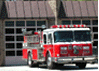

|

|
|
Characteristics
by Activity...
Public Order
and Safety
|
Public
order buildings are those used for the preservation of law and order or
public safety.
Basic Characteristics
[ See also: Equipment | Activity
Subcategories | Energy Use
]
| Public
Order and Safety Buildings...
- Volunteer fire stations tend not to be government
owned, which probably explains why 33 percent of public order
and safety buildings were not owned by Federal, state, or local
governments.
- Only 7 percent of all public order and safety
buildings were constructed in the 1990's.
- The Northeast Census region had a high concentration
of public order and safety buildings—43 percent of these
buildings are in the Northeast (while the Northeast region contained
only 9 percent of all commercial buildings).
|
|
Public Order and Safety Buildings by Ownership |
Tables:
Equipment
Table: Buildings,
Size, and Age Data by Equipment Types
Predominant Heating
Equipment Types in Public Order and Safety Buildings
Predominant
Cooling Equipment Types in Public Order and Safety Buildings
Top
Activity
Subcategories
|
Building respondents
who reported that their building was a public order and safety building
were then asked to place the building into the following more specific
categories:
- a jail,
reformatory, or penitentiary
- a courthouse
or probation office
- a fire or
police station
- some other
type of public order and safety building
|
|
Public
Order and Safety Buildings by Subcategory |
There were enough buildings in the responding sample to report statistics
for all of these types except for other public order and safety. Some examples
of other public order and safety are ambulance headquarters and a police,
fire, and rescue training center.
Table: Selected
Data by Type of Public Order and Safety Building
Top
Energy
Use
| Public
order and safety buildings used 102 trillion Btu of total energy,
which was 2 percent of total energy consumption for all commercial
buildings. Since they also accounted for 2 percent of commercial
floorspace, this means that their energy intensity was about average. |
|
Public order and safety buildings were one of the building types
to use a significant amount of fuel oil.
Tables:
Reference:
What is a Btu?
|
|
Energy
Consumption in Public Order and Safety Buildings by Energy Source
|
The
total energy consumption data in the figures and tables above are “site
energy,” which includes only the amount of electricity consumed
within the building; energy use can also be expressed as “primary
energy,” which includes the energy consumed during the generation
and transmission of electricity.
Public order and safety
buildings used 122 trillion Btu of primary electricity, so their total
primary energy consumption was 183 trillion Btu, or 2 percent of total
primary consumption for all commercial buildings.
Top
Specific questions may be directed to:
Joelle Michaels
joelle.michaels@eia.doe.gov
CBECS Manager
Release date: July 24, 2002
Page last modified:
May 4, 2009 2:52 PM
http://www.eia.gov/consumption/commercial/data/archive/cbecs/pba99/publicorder/publicorder.html
If you are having any technical problems with this
site, please contact the EIA webmaster at wmaster@eia.doe.gov.
|